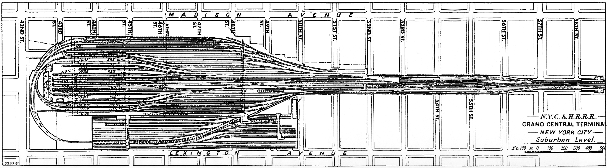
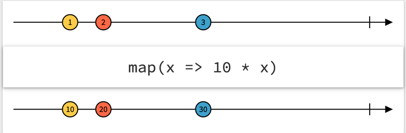

1. 2023-09-18
1.2. Mikroprojekt
-
max. 3-5 Tabellen
-
mit plantuml und asciidoctor dokumentieren
-
muss nicht alle user stories enthalten nur ein paar. Im Vordergrund steht das Üben der Technologien
| Name | Thema |
|---|---|
Baitura Fabian |
Büchererei |
Bieregger David |
Friedhofsverwaltung |
Brkic Ilijas |
Restaurant (Tische reservieren) |
Davila Mendez Francisco |
Reisebüro |
Dorn-Fussenegger Felix |
Gärtnerei |
Ferecean Yanis-Florian |
Tierarztpraxis |
Fischlmayr Daniel |
Eisenbahn (Fahrplan) |
Grundner Noah |
Fluggesellschaft |
Haas Felix |
Spedition |
Isakovic Arim |
Facility-Manager (Hausmeister) |
Kasieczka Lorenz |
Autovermietung |
Krenmayr Paul |
Hotel |
Leeb Leon |
Bank |
Nell Paul |
Radfahrverleih |
Pamminger Jonas |
Flughafen |
Saliu Arsim |
Nachhilfeverwaltung |
Schönbaß Jonas |
Fahrschule |
Stana Andrei-Lucian |
Immobilienverwaltung |
Trinkl Niklas |
Tennisverein |
2. 2023-09-21
2.2. Jakarta EE vs Microprofile
Jakarta EE |
Microprofile |
Umfassende Plattform für die Entwicklung von Unternehmensanwendungen in Java. |
Ist eine leichtgewichtige Plattform für Microservices und Cloud-native Anwendungen in Java. |
Es umfasst einen Application Server (Webserver), auf dem Java-Anwendungen in Form von .war-Dateien gehostet werden können. |
MicroProfile-Anwendungen können entweder als Jar-Dateien oder native Binaries ausgeführt werden. |
Jakarta EE-Anwendungen verwenden Jakarta EE Libraries. |
Es basiert auf Java und kann Java-Code verwenden, erfordert jedoch auch Jakarta EE Libraries, um auf bestimmte Funktionen zuzugreifen. |
Es erfordert einen dedizierten Server für die Ausführung. |
Hauptvorteil besteht darin, dass es keinen dedizierten Server erfordert und eigenständig ausführbar ist. |
Sind in der Regel schwerer und ressourcenintensiver als MicroProfile-Anwendungen. |
Verbraucht wenig Ressourcen und bietet eine hohe Leistung, wodurch es ideal für die Ausführung in der Cloud ist. |
Ein .war-Datei (Web Application Archive) ist ein Dateiformat in der Java-Softwareentwicklung, das verwendet wird, um eine vollständige Webanwendung, einschließlich aller erforderlichen Ressourcen wie HTML-Seiten, Java-Klassen und Bibliotheken, zu verpacken, um sie auf einem Java Application Server bereitzustellen.
Eine .jar-Datei (Java Archive) ist ein Archivformat in Java, das verwendet wird, um Java-Klassen, Ressourcen und Bibliotheken in einer einzelnen komprimierten Datei zu speichern, wodurch die Verteilung von Java-Anwendungen und -Bibliotheken erleichtert wird.
| Jakarta EE hieß früher Java EE. Der Name wurde geändert, um zu zeigen, dass es jetzt von der Jakarta EE-Community entwickelt wird, nachdem es früher von Oracle betreut wurde. |
| Wir werden Microprofile lernen/verwenden. |
2.3. REST-APIs und CRUD: Eine Einführung
2.3.1. REST-Methoden: GET, PUT, POST, PATCH und DELETE
REST (Representational State Transfer) ist ein Architekturstil für die Kommunikation zwischen Systemen über das Internet. Es verwendet verschiedene HTTP-Methoden, um auf Ressourcen zuzugreifen und mit ihnen zu interagieren:
-
GET: Dient dem Abrufen von Daten.
-
PUT: Aktualisiert oder erstellt eine Ressource.
-
POST: Erstellt eine neue Ressource.
-
PATCH: Aktualisiert eine Teilmenge einer Ressource.
-
DELETE: Löscht eine Ressource.
2.3.2. Vergleich mit CRUD-Operationen
REST-Methoden können mit den grundlegenden CRUD-Operationen (Create, Read, Update, Delete) in Verbindung gebracht werden:
-
GET entspricht dem Lesen (Read) von Daten.
-
PUT entspricht dem Aktualisieren (Update) von Daten.
-
POST entspricht dem Erstellen (Create) neuer Daten.
-
PATCH entspricht dem Aktualisieren (Update) von Teilen von Daten.
-
DELETE entspricht dem Löschen (Delete) von Daten.
REST erweitert diese CRUD-Operationen und ermöglicht eine flexiblere Kommunikation zwischen Systemen.
2.4. Java im Internet: Servlets
Java wird häufig im Internet für die Entwicklung von Webanwendungen verwendet, und eine gängige Methode hierfür sind Servlets.
Servlets sind Java-Klassen, deren Instanzen innerhalb eines Webservers Anfragen von Clients entgegennehmen und beantworten. Der Inhalt der Antworten kann dabei dynamisch, also im Moment der Anfrage, erstellt werden und muss nicht bereits statisch (z.B. als HTML-Seite) für den Webserver verfügbar sein.
| Websiten sind das Internet für Menschen, während REST das Internet für Maschinen ist. |

3. 2023-09-28
4. 2023-10-02
\[Davila Mendez Francisco]
4.1. JVM
Die Java Virtual Machine interpretiert den kompilierten Code in Bytecode, was sie sehr langsam macht. Wenn eine Methode oder ein Stück Code häufig angefragt wird, wird dieser nicht mehr interpretiert, sondern maschinenübersetzt, wodurch er schneller ausgeführt wird.
4.2. Caching
-
Client-seitiges Rendering → Die Benutzeroberfläche wird größtenteils im Browser des Benutzers gerendert. Dabei wird das Frontend, das im Cache gespeichert ist, über die GUI vom Backend-Server abgerufen, wenn weitere Anfragen gestellt werden.
-
Serverseitiges Rendering: Die Benutzeroberfläche wird auf dem Server vorbereitet und als HTML an den Client gesendet. Zum Beispiel in PHP.
4.3. Browser
HTTP erlaubt maximal 2 gleichzeitige Verbindungen, während Chrome ein Limit von 6 Verbindungen pro Remote-Seite hat. Dies kann zu Problemen führen!
4.4. Lösung
HTTP-Header: Nach der ersten Anfrage erhält man ein Ablaufdatum (Expires). Bei Überschreitung dieses Datums wird eine neue GET-Anfrage an den Server gesendet (Antwort: wieder ein Response mit Expires). Dies ermöglicht es, Daten beim erneuten Laden der Seite nicht vom Server, sondern aus dem Cache abzurufen, solange das Expires gültig ist.
4.5. E-Tag
Beim ersten Request erhält der Client eine JSON und einen Hash. Bei einem Reload sendet er den erhaltenen Hash an den Server zurück, dieser hasht seine Daten und vergleicht beide Hashes. Sollten Änderungen vorliegen, sendet der Server die neue JSON und einen neuen Hash; andernfalls erfolgt eine 304-Warnung.
5. 2023-10-05
5.1. Bsp Gärtnerei
-
Als Mitarbeiter der Personalabteilung möchte ich die Arbeitszeiten der einzelnen Mitarbeiter erfassen, um das monatliche Gehalt berechnen zu können.
| In einem ersten Schritt erstelle ich ein Datenmodell ohne technische Infos zB Id’s |
| Beziehungen | Beschreibung | Beispiel |
|---|---|---|
Assoziation |
benutzt-Beziehung |
Hansi hat einen Hund Flocki |
Komposition |
besteht-aus Beziehung; Merkmal: Objekt wird zerstört bei Zerlegung |
Haus besteht aus Etagen |
Aggregation |
besteht-aus Beziehung; Merkmal: Objekt wird bei Zerlegung NICHT zerstört |
Auto hat Autoreifen |
Vererbung |
Vererbungsbeziehung |
Ein Hund erbt vom Säugetier |
-
Was sind Stamm- und Bewegungsdaten:
-
auch Master-Data und Transaction-Data genannt
-
Stammdaten sind auch mehrere Perioden gültig zB Personen, Produkte, Kategorien, …
-
Bewegungsdaten sind meist nur eine Periode (zB Geschäftsjahr) gültig
-
zB Rechnungen, Bestellungen
-
man erkennt Bewegungsdaten an einem Datum zB Rechnungsdatum, Bestelldatum
-
Das Geburtsdatum bei Personen zählt nicht
-
Bewegungsdaten sind meist zwischen Stammdaten angesiedelt
-
-
Im obigen Beispiel sind Person und Abteilung die Stammdaten, die Arbeitszeit ist die Klasse der Bewegungsdaten.
6. 2023-10-09
6.1. DOM - Domain Object Model
-
der Pfeil bei der Beziehung stellt eine gerichtete Assoziation dar, dh
-
wenn wir uns "in" einem Person - Objekt befinden können wir über hobby auf das zugehörige Hobby zugreifen, zB
Hobby h = franzi.getHobby(); -
Umgekehrt ist das nicht möglich. Bin ich "in" einem Hobby Objekt, habe ich keinen Zugriff auf alle Personen die dieses Hobby ausüben
-
Man müsste zuerst eine SQL-Query absetzen, um eine Liste aller Personen zu erhalten, die dieses Hobby ausüben
-
public class Person {
int id;
}
public static void main(...) {
Person p = new Person();
System.out.println(p.getId());
// 0
}public class Person {
Integer id;
}
public static void main(...) {
Person p = new Person();
System.out.println(p.getId());
// null
}7. 2023-10-12
Geschrieben von Jonas Pamminger
7.1. Arrange, Act, Assert
Arrange, Act, Assert ist ein Pattern, das verwendet wird, um Unit-Tests zu schreiben. Es besteht aus drei Schritten:
-
Arrange - Aufsetzen der Testfälle, wie zum Beispiel:
-
Braucht der Test irgendwelche Objekte oder spezielle Settings?
-
Muss man eine Datenbank vorbereiten?
-
Muss man sich irgendwo anmelden?
-
-
Act - Ausführen des Tests
-
Hier werden die Methode aufrufen, die wir testen wollen, dass könnte zum Beispiel sein:
-
Aufruf von Methoden
-
Aufruf von einer REST API
-
-
-
Assert - Überprüfen des Ergebnisses
-
Hier wird überprüft, ob das Ergebnis dem erwarteten Ergebnis entspricht
-
Der Act Step sollte eine Art von Antwort haben. Im Assert Step wird diese Antwort überprüft.
-
Der Assert Step entscheidet dann ob der Test erfolgreich war oder nicht.
-
7.2. Quarkus REST-Service
| Am Anfang immer empfehlenswert ./mvnw clean ausführen, um den target Ordner zu löschen. |
@Produces(MediaType.APPLICATION_JSON)
public Vehicle find() {...}@Produces({MediaType.APPLICATION_JSON, MediaType.APPLICATION_XML})
public Vehicle find() {...}| Wenn wir XML zurückgeben wollen müssen wir auch @Produces setzen. Aber die Klassen die wir zurückgeben müssen auch mit @XmlRootElement annotiert werden. |
7.3. Testing
7.3.1. Matcher
| to match heißt übersetzt schauen ob etwas übereinstimmt. |
Ein Matcher ist ein Tool das uns ermöglicht, zu überprüfen, ob bestimmte Teile des Programms das erwartete Ergebnis produzieren.
Zum Beispiel, wenn man eine Funktion hat die zwei Zahlen addiert kann ein Matcher sicherstellen, dass das Ergebnis der Addition das erwartete Ergebnis ist.
In einfachen Worten ist ein Matcher also ein Werkzeug, das in Unit-Tests verwendet wird, um zu überprüfen, ob der Code das tut, was er tun soll, indem er die tatsächlichen Ergebnisse mit den erwarteten Ergebnissen vergleicht.
Wir nutzten den Matcher assertj. Dieser Matcher ist sehr mächtig und wird noch immer weiterentwickelt.
Für von der REST-API haben wir rest-assured verwendet. Dieser Matcher ist speziell für REST-APIs entwickelt worden. Hier ist ein kurzes Beispiel
@Test
void testVehicleEndpoint() {
given()
.when()
// .log().body()
.get("/vehicle")
.then()
.log().body()
.statusCode(200)
// is ist veraltet, assertThat verwenden
.body("brand[0]", is("Opel"), "model[0]", is("Commodore"),
"brand[1]", is("Opel"), "model[1]", is("Kadett"));
}-
@Test: Dies ist eine Annotation, die anzeigt, dass die folgende Methode als Testfall ausgeführt werden soll. In diesem Fall handelt es sich um die Methode testVehicleEndpoint.
-
given(): Dies ist der Startpunkt für die Verkettung von Methoden, die die Vorbereitung für die API-Anfrage durchführen. Hier wird eine HTTP-Anfrage vorbereitet.
-
.when(): Dies ist eine Fortsetzung der Vorbereitung und zeigt an, dass die nächste Aktion die Ausführung der Anfrage ist.
-
.get("/vehicle"): Hier wird die tatsächliche HTTP-GET-Anfrage an den Endpunkt "/vehicle" gesendet.
-
.then(): Nachdem die Anfrage abgeschlossen ist, beginnt dieser Block die Verkettung von Methoden, um die Antwort zu überprüfen.
-
.log().body(): Dieser Befehl zeichnet den Inhalt der Antwort (Body) in den Testprotokollen auf. Es wird oft verwendet, um Debugging-Informationen anzuzeigen.
-
.statusCode(200): Hier wird überprüft, ob der HTTP-Statuscode der Antwort 200 (OK) ist. Wenn nicht, schlägt der Test fehl.
-
.body("brand[0]", is("Opel"), "model[0]", is("Commodore"), "brand[1]", is("Opel"), "model[1]", is("Kadett")): Dieser Teil des Codes überprüft den Inhalt des Antwortkörpers. Es verwendet Hamcrest-Matchers (wie is) für die Prüfung. Hier wird erwartet, dass die Antwort ein JSON-Objekt enthält, das die Felder "brand" und "model" enthält, wobei die Werte an den Indexpositionen 0 und 1 jeweils "Opel" und "Commodore" bzw. "Opel" und "Kadett" entsprechen. Wenn dies nicht der Fall ist, schlägt der Test fehl.
| In den Technology Notes wird noch manchmal der Matcher Hamcrest verwendet. Dieser Matcher ist veraltet und sollte nicht mehr verwendet werden. |
7.4. Parameter bei Requests
Parameterart |
Beschreibung |
Beispiel |
Query-Parameter |
Übertragen Informationen in der URL |
|
Path-Parameter |
Teile der URL, die als Parameter interpretiert werden |
|
Header-Parameter |
Informationen in den HTTP-Headern |
curl https://reqbin.com/echo/post/json -H 'X-Custom-Header: value' -H 'Content-Type: application/json' -d '{"Id": 1}' |
JSON-Parameter |
Übertragen von Daten im Request-Body als JSON |
POST /api Content-Type: application/json {"param1": "value1", "param2": "value2"} |
XML-Parameter |
Übertragen von Daten im Request-Body als XML |
POST /api Content-Type: application/xml <request><param1>value1</param1><param2>value2</param2></request> |
9. 2023-10-19
Erweitert von Niklas Trinkl
9.1. REST Rückgabetypen
-
JSON-Libraries
-
Jackson
-
GSON
-
jakarta.json (JSON-P)
-
uvam.
-
9.2. JSON-P (JSON Processing)
-
JSON-Objekte können selbst gebaut werden
-
Folgende Datentypen:
-
JsonObject
-
JsonArray
-
JsonValue
-
-
JsonValue verwendet man, wenn noch nicht sicher ist welcher Datentyp empfangen oder gesendet wird (entweder JsonObject oder JsonArray)
-
Für die Verarbeitung von Json gibt es (neben anderen) zwei Standards
-
JSON-P
-
zum Erstellen von beliebigen Json-Objekten inkl JsonArrays
-
-
JSON Binding (JAX-B für XML)
-
Zum automatischen marshalling und unmarshalling von Java-Objekten in eine Json Repräsentation und vice versa
-
Marshalling bedeutet, dass ein Java-Objekt in eine Json Repräsentation (Json-Objekt oder Json-Array) umgewandelt wird
-
Serialization bedeutet, dass ein Objekt in einen Byte-Stream umgewandelt wird, der Code wird aber nicht mit umgewandelt. Serialization ist ein Teil von Marshalling
-
-
-
Jsonb jsonb = JsonbBuilder.create();
//Serialisieren
String result = jsonb.toJson(person);
//Deserialisieren
person = jsonb.fromJson("{name:\"Joe\"}", Person.class);JsonbConfig config = new JsonbConfig()
.withFormatting(true)
.withPropertyNamingStrategy(PropertyNamingStrategy.LOWER_CASE_WITH_UNDERSCORES);
Jsonb jsonb = JsonbBuilder.create(config);
//Serialisieren
String result = jsonb.toJson(person);
//Deserialisieren
person = jsonb.fromJson("{\"person_name\":\"Alice\"}", Person.class);Im folgenden Beispiel wird die @JsonbProperty-Annotation verwendet, um das Feld "name" in "person-name" umzubenennen, wenn das Objekt in JSON serialisiert wird.
public class Person {
@JsonbProperty("person-name")
private String name;
}{
"person-name": "Fred"
}9.3. Response
geschrieben von Niklas Trinkl
9.3.1. GET Response
@GET
@Path("response")
public Response getResponse() {
return Response.ok(new Vehicle("Opel", "Senator"))
.header("MY-SUPER-HEADER", "super")
.build();
}-
@GET und @Path("response"): Dies sind JAX-RS-Annotationen für eine RESTful-Service-Methode. @GET gibt an, dass diese Methode auf HTTP GET-Anfragen reagiert, und @Path("response") legt den Pfad fest, unter dem die Methode aufgerufen wird, z. B. "/response".
-
public Response getResponse(): Dies ist die Methode selbst, die aufgerufen wird, wenn eine GET-Anfrage an den angegebenen Pfad gestellt wird. Sie gibt eine Response zurück, die eine HTTP-Antwort repräsentiert.
-
Response.ok(new Vehicle("Opel", "Senator")): Hier wird eine erfolgreiche (HTTP-Statuscode 200) Response erstellt. Sie enthält ein Objekt vom Typ Vehicle, wobei "Opel" und "Senator" als Parameter übergeben werden.
-
header("MY-SUPER-HEADER", "super"): Hier wird ein benutzerdefinierter Header ("MY-SUPER-HEADER") zur HTTP-Antwort hinzugefügt, und ihm wird der Wert "super" zugewiesen.
-
build(): Hier wird die endgültige HTTP-Antwort erstellt und zurückgegeben.
9.3.2. POST Response
@POST
public Response createVehicle(Vehicle vehicle) {
return Response
.ok(Json.createObjectBuilder()
.add("a", "b")
.build().toString()
)
.build();
}-
@POST: Dies ist eine JAX-RS-Annotation, die anzeigt, dass diese Methode auf HTTP POST-Anfragen reagiert. Das bedeutet, dass sie verwendet wird, um Ressourcen zu erstellen oder Daten an den Server zu senden.
-
public Response createVehicle(Vehicle vehicle): Dies ist die Methode, die aufgerufen wird, wenn eine POST-Anfrage eingeht. Sie erwartet ein Objekt vom Typ Vehicle als Parameter, das in der Anfrage übermittelt wird.
-
Response.ok(Json.createObjectBuilder().add("a", "b").build().toString()): Hier wird eine erfolgreiche (HTTP-Statuscode 200) Response erstellt. Der Inhalt der Antwort wird als JSON erstellt, indem ein JSON-Objekt mit einem Schlüssel-Wert-Paar ("a" - "b") erstellt und dann in einen JSON-String umgewandelt wird.
-
build(): Hier wird die endgültige HTTP-Antwort erstellt und zurückgegeben.
| Methoden mit . anreihen nennt man chaining |
@POST
public Response createVehicle(Vehicle vehicle, @Context UriInfo uriInfo) {
URI uri = uriInfo.getAbsolutePathBuilder().path("23").build();
return Response
.created(uri)
.build();
}-
@POST: Die Methode reagiert auf HTTP POST-Anfragen.
-
public Response createVehicle(Vehicle vehicle, @Context UriInfo uriInfo): Die Methode erwartet ein Vehicle-Objekt in der Anfrage und verwendet @Context zusammen mit UriInfo uriInfo für den Zugriff auf die Anfrage-URI-Informationen.
-
URI uri = uriInfo.getAbsolutePathBuilder().path("23").build(): Erstellt eine URI mit dem Basis-URI und dem angehängten Pfad "23".
-
Response.created(uri).build(): Erstellt eine HTTP-Antwort mit Statuscode 201 (erstellt) und gibt die erstellte URI zurück.
| @Context: Diese Annotation ermöglicht den Zugriff auf verschiedene Kontextinformationen, die von der JAX-RS-Laufzeit bereitgestellt werden. |
9.4. Web Application Exception
Web Application Exceptions werden verwendet, damit der Code einfacher, sauberer und besser zu verstehen ist. Es ist sauberer eine throw new ProductNotFoundException() zu schreiben, als eine Response mit einem HTTP-Statuscode zu erstellen und erst später die Details des Fehlers herauszufinden.
9.5. Request- und Response-Filter
Filter können verwendet werden um Request- oder Response-Parameter, wie Headers zu verändern oder zu überprüfen. Um Filter hinzuzufügen muss man entweder ContainerRequestFilter oder ContainerResponseFilter implementieren. Es ist außerdem ratsam die Annotation @Provider zu verwenden, damit der Filter auch gefunden wird.
@Provider
public class LogFilter implements ContainerRequestFilter, ContainerResponseFilter {
@Override
public void filter(ContainerRequestContext reqContext) throws IOException {
System.out.println(reqContext.getUriInfo(), reqContext.getHeaders());
}
@Override
public void filter(ContainerRequestContext reqContext, ContainerResponseContext resContext) throws IOException {
System.out.println(reqContext.getUriInfo(), resContext.getHeaders());
}
}10. Übung 3
-
Erstellen Sie aufgrund des korrigierten Datenmodells ein Quarkus-Project für Ihre Themenstellung
-
pom.xml
-
artifactId → backend-<projektthema>
-
groupId → at.htlleonding.<projektthema>
-
-
Extensions
-
resteasy-reactive
-
resteasy-reactive-jackson
-
-
Wir verwenden das BCE-Pattern mit den packages
-
boundary
-
control
-
entity
-
-
Erstellen Sie im package
entitydie Klassen für Ihr Thema-
Achten Sie darauf KEINE Annotationen für die Persistierung der Daten zu verwenden. Nur die POJOs sind zu erstellen.
-
-
Termin: 1. November 2023 (damit wir anschließend im Unterricht die Persistierung durchführen können)
-
Offene Punkte (für später)
-
Testdaten importieren mit
import.sql -
Unit-Tests erstellen für POJOs (entsprechend den User Stories)
-
11. 2023-11-09
13. 2023-11-20
Wiederholung 3-Tier Architecture Testmethoden in der Praxis

-
Im Projekt Vehicle das Repository angelegt.
14. 2023-11-23
<dependency>
<groupId>org.assertj</groupId>
<artifactId>assertj-db</artifactId>
<version>2.0.2</version>
<scope>test</scope>
</dependency>19. 2024-01-11 - Android
erweitert von Nell Paul
19.1. Projekt erstellen:
-
Empty Activity mit Kotlin DSL.
-
Hier ist wichtig, dass der Package-Name die richtige (eindeutige) Benennung hat, weil der Name beim Hochladen der App gebraucht wird (Bsp.: at.htl-leonding.myfirstapp).
-
Minimum Sdk: Auf welcher Android-Version soll die App mindestens laufen?
-
Device erstellen: Pixel 7
-
Breakpoint setzen
-
debuggen
-
19.2. Jetpack Compose
-
Activity: Die Aktive Sicht der App, hat eine Lebensdauer (Activity-Lifecylce)
-
Main Thread: Kann keine asynchronen Vorgänge beinhalten. Eine ordentliche Architektur ist wichtig.
-
Activity-Lifecycle:
-
Activity Launch (Start): Ruft eine Standardaktivität auf (weißes Fenster, in app manifest (= Absichtserklärung)), wird schnell überladen
-
OnCreate: Erste Funktion die aufgerufen wird, wenn das Programm noch nicht läuft
-
Activity running: Fertig gestartete App ⇒ aktive activity
-
OnPause: Activity nicht mehr im Vordergrund - rennt noch im Hintergrund
-
OnStop: Activity wird gestoppt
-
App Process killed: Mehr Speicher wird freigemacht, durchs Neustarten, User merkt nichts
-
OnDestroy: App & Activity werden geschlossen
-
OnResume: Alte Activity wird geladen (im Hintergrund offen)
-
Alles mit On- ist ein Aufruf vom OS an uns (Keine funktionen mit On nennen, außer Button, weil der call vom Main-Frame kommt)
-
Eine Activity hat eine View, die das Aussehen bestimmt
-
-
Wiederholung: MVC-Pattern (Model, View, Controller)
In dieser Grafik sehen wir, das MVC-Modell als "Straßenverkehr". View und Model dürfen durch die Sperrlinie nur mit dem Controller kommunizieren.
19.3. Reactive
-
Ist ein sprachenunabhängiges Designkonzept
19.3.1. Promises
-
"Don’t call us, we call you"
-
Die Rückgabe einer Funktion ist kein Int, String, … sondern ein Versprechen (Promise).
-
In Java sind Promises die Futures
-
-
Warum asynchron?
-
https://en.wikipedia.org/wiki/Grand_Central_Terminal#/media/File:RailUS_GCT-lowerTracksPlan.gif
 -
Wenn ein Gleis belegt ist, wird ein paralleles Gleis benutzt
-
Wenn etwas länger als 1/24-Sekunde dauert, muss es in einen nebenläufigen Thread gespeichert werden, da sonst die GUI ruckelt.
-
vgl. Philosopher Problem
-
Callback-Hell
-
{kind=link}
-
siehe auch Promises in JS:
-

-
Auf Observables werden OperatorFunctions (zB map) angewendet.
-
20. 2024-01-18
20.1. DI - Dependency Injection
-
"new ist immer falsch", da wir den Kontext nicht mitbekommen.
-
@ApplicationScoped oder dgl. bietet eine Klasse an, die mit
-
@Inject angefordert werden kann.
-
In Android wird "Hilt" verwendet
package at.ac.htl.myfirstapp.model;
import javax.inject.Inject;
import javax.inject.Singleton;
@Singleton
public class Store {
@Inject
Store(){
};
public String greeting = "Hello World";
}20.2. Design-Prinzipien für Design von User-Interface Anwendungen
-
Single Source of Truth
-
read-only state
-
State-Änderungen nur duch pure (virtual) functions
-
pure-Functions: Der Rückgabewert einer puren Funktion hängt nur von den Eingangsparametern ab.
-
-
Observables
-
kalt: schicken nur Daten, wenn Observer vorhanden
-
warm: schicken immer Daten
-
BehaviourObservables: nur der letzte Wert wird kopiert
-
21. 2024-01-24 - Android
Mitschrift Leon Leeb
21.1. Dependency injection:
"new" ist immer falsch, dann kriegen wir den kontext nicht mit wir verlassen uns auf unseren DI-Container, der macht das für uns. Wir markieren die Klasse mit @ApplicationScoped (oder einem anderen Scope) und der DI-Container erstellt das Objekt wenns es das erste Mal injected wird. Falls vorhanden gibt er uns das vorhandene Objekt
21.1.1. Hilt dependency injection für android:
Plugins:
im project gradle:
plugins {
id("com.google.dagger.hilt.android") version "2.44" apply false
}
im module gradle:
plugins {
kotlin("kapt")
id("com.google.dagger.hilt.android")
}
dependencies {
implementation("com.google.dagger:hilt-android:2.44")
kapt("com.google.dagger:hilt-android-compiler:2.44")
}
kapt {
correctErrorTypes = true
}
21.1.2. Manifest:
Im manifest steht alles drin, was die app können soll,
wenn man eine neue Klasse erstellt kann man im manifest diese Klasse angeben, dann wird die beim Programmstart ausgeführt und nicht die mit der standard application (mit android:name="ac.htl.className")
21.1.3. Annotations:
-
Die Annotation "@HiltAndroidApp" muss über der klasse stehen
-
Eine Klasse erstellen und darüber "@Singleton" schreiben, die klasse können wir dann injecten
-
wenn wir dann properties in der Singleton Klasse machen und in einer anderen ein @Inject machen und ein object mit der klasse anlegen, können wir auf die properties zugreifen. Wichtig: in der Singleton Klasse muss auch ein @Inject über dem Konstruktor stehen und es muss @AndroidEntryPoint über der Klasse, wo man dependency injecten will, stehen
21.2. Prinzipien für ui design (coke and pepsi):
-
single source of truth
-
nur eine klasse für design, in der steht aber alles übers design drinnen
-
-
read only state
-
wir müssen ein datenmodell finden das so minimal wie möglich ist aber so komplex wie nötig
-
-
state - änderung nur durch pure function
-
pure function ist eine function wo die Ausgabe nur von den parametern abhängt
-
21.3. Shallow vs Deep copy:
Bei einer shallow copy werden einfach nur die obersten Werte kopiert, bei einer deep kopie auch alles, was referenziert wird, (das oberste ist meistens ein pointer auf ein object)
21.4. Observable:
Obervable ist eine Architektur wo jedes Mal die Liste der zu observierenden Daten durchlaufen wird, wenn etwas dazu kommt
(source: Modernizing Enterprise Java, M. Eisele and N. Vinto, 2022, O’Reilly, S.33)
24. 2024-03-21


24.1. Prinzipen
-
https://redux.js.org/understanding/thinking-in-redux/three-principles
-
Single-Source-Of-Truth
-
read-only state
-
deep clone of the model
-
-
veränderbar nur durch pure-function
-
hat keine Seiteneffekte
-
der Funktionswert bestimmt sich nur durch die Parameter
-
-
24.5. Promise
-
promise … (Versprechen)
-
Der return-Wert einer Funktion ist noch nicht vorhanden, aber er ist versprochen (in Java "Future")
-
bei await würde ich blocken. Das will ich nicht daher erstelle ich eine Kette von Funktionen
-
zB Sensor sendet Wert (Fahrenheit) → Umrechnung in Grad Celsius → formatierter String
-
-
Subject ist eine Erweiterung einer Observablen
-
mit onNext (oder next) wird ein Wert (Marble) in das BehaviorSubject (Röhre) geschickt
-
Ein State übersetzt einen Wert des BehaviorSubjects (RxJava) in die Welt von Jetpack Compose
-
27. 2024-04-04 Reactive in Angular
-
Angular: Signal
-
Android: MutableStateFlow
-
Swift: @ObservedObject
-
React:
-
Flutter:
-
CSS_Library
-
pico js
-
ngBootstrap
-
npm -v mkdir ng-demo cd ng-demo npm init -y npm install @angular/cli npx ng new ng-demo npm start cd ng-demo npm start cd labs/ng-demo/ng-demo webstorm . npx ng g c components/hello npm start npx ng g s services/store npm install immer npm start npx ng g c components/logger